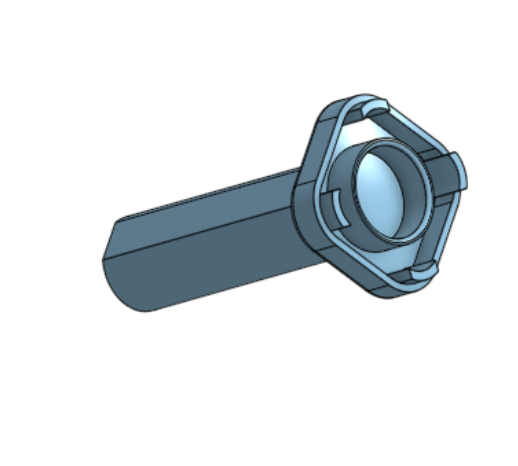
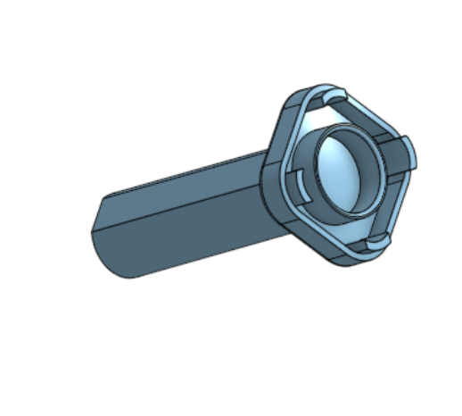

Ideation
Exploring mural concepts and defining system constraints.
Exploring mural concepts and defining system constraints.
Building and testing early mechanical and software prototypes.
Our original motor mount design was designed such that the mounts were stationary and the position of the motor can be adjusted by loosening and tightening a screw. This original design was intended for easy addition and removal of the cube from our system. However, the issue with this design was that it was manual. Since we wanted our solver to remove the cube on its own, we would need to redesign the motor mounts to be connected to a system which could move them in and out. So, we redesigned the motor mounts so that all the motors would be stationary in respect to the mounts but each mount would be able to move in and out using a pulley system.
We originally had planned to use a bevel gear system with lead screws to move the motor mounts in and out thinking that would offer precise and controlled motion. However, through prototyping, we came to realize that the lead screw implementation created too much friction to offer a smooth controlled motion and more importantly, took up a significant amount of vertical space in the bottom center of the box, needed by the motor which controls the bottom face of the cube. Since the motor needs room to move up and down, the lead screw implementation would interfere with its motion and also would constrain the overall layout. Ultimately, we decided to pivot to a pulley based system which was much more compact, had no interference with the path of movement for the bottom motor, and was much simpler to implement.
 

Early in the design process, we debated between two different motor to cube attachments: one that inserts directly in the center of the cube face and another that wraps around each face of the cube. While the face gripping attachment seemed appealing, as it wouldn’t require any alteration to the cubes, it required the motors to move out of the way with each rotation to allow for adjacent faces to be able to be turned. This complicated the motion planning algorithm and also introduced issues with the faces jamming during testing due to misalignment. In the end, we went with the center-insert attachment as it allowed rotation of each face without having to retract motors, simplified the algorithm, and was more reliable. However, this design decision did come with the tradeoff that we would have to remove the center pieces of each cube.
When designing the mechanism to move the bottom face motor up and down, we explored several lead screw mounting configurations. We debated between mounting the lead screw directly under the motor, so it could push a stage where the motor was mounted up and down, mounting the lead screw motor upside down from the top face of the box, and mounting it along the side of the motor in the bottom housing. After CADing the various options and, we ultimately chose the side-mounted lead screw motor because it minimized the overall height of the system while still providing stable, controlled vertical motion. Mounting the lead screw at the top would have required the motor to be held upside down which would have compromised stability and having it directly below would have interfered with the pulley system. Mounting from the side was the best approach, though it did require a few additional components to help maintain stability since it was being held from one side.